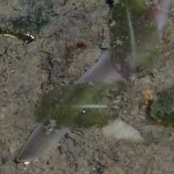
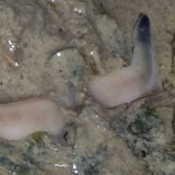
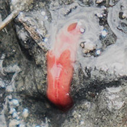
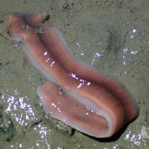

|
|
|
worms
text index | photo
index
|
| worms > Phylum Nemertea |
| Pink
ribbon worm awaiting identification* updated Feb 14 Where seen? This long pink ribbon worm is commonly seen at night on silty areas among seagrasses and near mangroves. Features: Grouped in this entry are ribbon worms that are 20-50cm long with broad flat bodies coloured pink or reddish. Often the head and tail paler with dark or black tip. Sometimes, one is seen swimming vigorously in the water. |
 Changi, Jul 06 |
 Dark tail. |
 Dark or black head. |
 Sometimes seen swimming in the water. Tuas, May 05 |
||
*Species are difficult to positively identify without close examination.
On this website, they are grouped by external features for convenience of display.
| Pink ribbon worms on Singapore shores |
On wildsingapore
flickr
|
| Other sightings on Singapore shores |
 Sg Pang Sua, Dec 25 Photo shared by Rui Quan Oh on facebook. |
||
 Changi, Oct 25 Photo shared by Adriane Lee on facebbok. |